GLM-5：从生成代码，走向持续完成工程任务
这份报告的主线是：把长上下文架构、可执行训练环境、异步强化学习和工程评测连成一条闭环，让模型在多次工具调用与环境反馈中维持任务进度。
指定版本 PDF · arXiv / 版本记录 · 原文 HTML · 官方代码 · 公开权重 · DOI
正文按论文原章节顺序，包括附录。13 张原图（16 个面板）、13 张完整原表与 5 个编号公式均保留；英文 caption 放在图片外。标为“论文报告”的数字来自作者，标为“推导 / 解释”的内容是本页分析。没有执行 744B 模型训练或 GPU 性能复现。2026 年 3–10 月的后续资料单独列出，不用于改写 2 月论文。
Abstract 与 TL;DR
一句话： GLM-5 用 DSA 降低长上下文 Attention 的计算，用可验证的工程环境训练行为，再以异步 RL、精确 token 记录和缓存亲和性支撑长时间运行的 agent。
一段话： “Vibe coding” 通常以一次生成是否看起来正确为中心；“agentic engineering” 要求模型能探索仓库、定位依赖、修改代码、运行检查、解释失败并继续迭代。作者把模型从 GLM-4.5 的 355B / 32B active 扩展到 744B / 40B active，训练 token 预算约 28.5T，改用 MLA + DSA，并围绕真实工具环境实施多阶段后训练。它在多项代码与工具评测上接近闭源强模型，但前端完整实例成功率、最新 SWE 任务与长任务链仍暴露明显缺口。
五个关键点：
- 架构与系统协同。 MLA 压缩 KV，DSA 选择历史 token 子集，MTP 共享参数；三者解决的成本不同。
- 训练数据变成可执行任务。 从网页、代码和数学语料，推进到 issue–PR、可启动仓库、终端、搜索与可渲染页面。
- 异步 RL 解决等待。 rollout 与 learner 独立运行，以 buffer、版本约束和 token-level importance sampling 管理滞后。
- 精度一致性是训练前提。 同权重也可能因 kernel、量化、路由与重新分词产生 log-probability 差异。
- 评测要看成功单位。 Build、check item、完整 instance、单个链内任务与整条任务链是不同指标，不能相互替代。
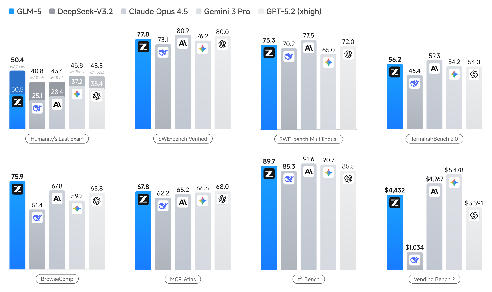
Original paper · 2602.15763v2 · Click / Enter to zoom. Caption outside image.
Figure 1 怎么读。 这是八个 agentic / reasoning / coding 基准的概览。先辨认每组 benchmark，再在同一组比较模型；不同指标不适合跨组求平均。HLE 有 text-only 与 full-set 口径，Terminal 有原版与 verified 版，Vending 是经营结果而非百分比，准确条件以 Table 7 为准。图 caption 的比较对象含 DeepSeek-V3.2；§1 概述文字却把这一组对象写成 GLM-4.7，这是原文内部不一致，本页保留图的实际标签。
1 · Introduction：工程可靠性意味着什么
论文把目标从写出一段代码推进到持续交付可验证的结果。长任务必须把早期约束、当前状态与后续动作连接起来：工具执行失败不应该直接终止，局部修改不应该破坏前序功能，搜索结果过长不应该挤掉有效状态。
作者的三个观察是：更强基础能力仍重要；长上下文的资源成本会限制 agent 持续工作；同步 RL 被复杂环境与长尾轨迹拖慢。对应方法是扩展模型与训练语料、采用 DSA、构建支持异步 agent rollout 的 slime 系统，并建立 CC-Bench-V2 等工程评测。
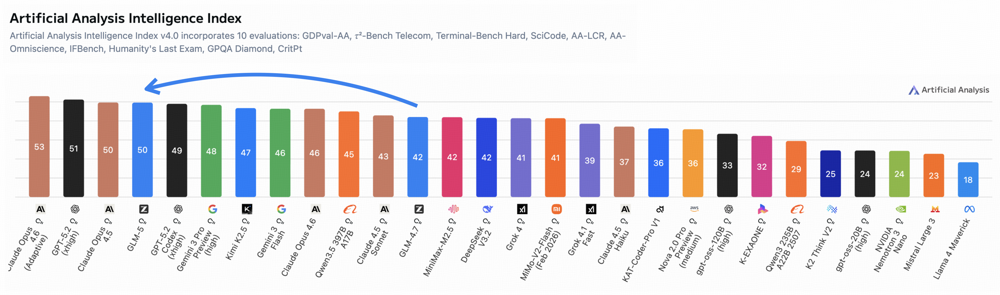
Original paper · 2602.15763v2 · Click / Enter to zoom. Caption outside image.
Figure 2：能力指数是发布时的快照。 Artificial Analysis Intelligence Index v4.0 组合十项评测，GLM-5 的图示分数为 50，GLM-4.7 为 42。这支持该指数下的整体进步，不能解释为所有任务增加 8 个百分点，也不是 2026-10-29 的实时排名。
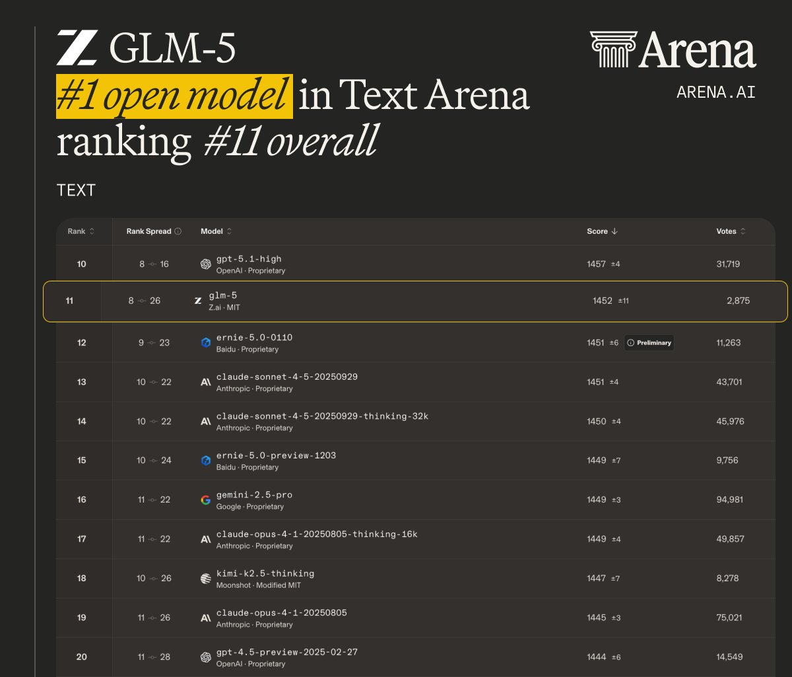
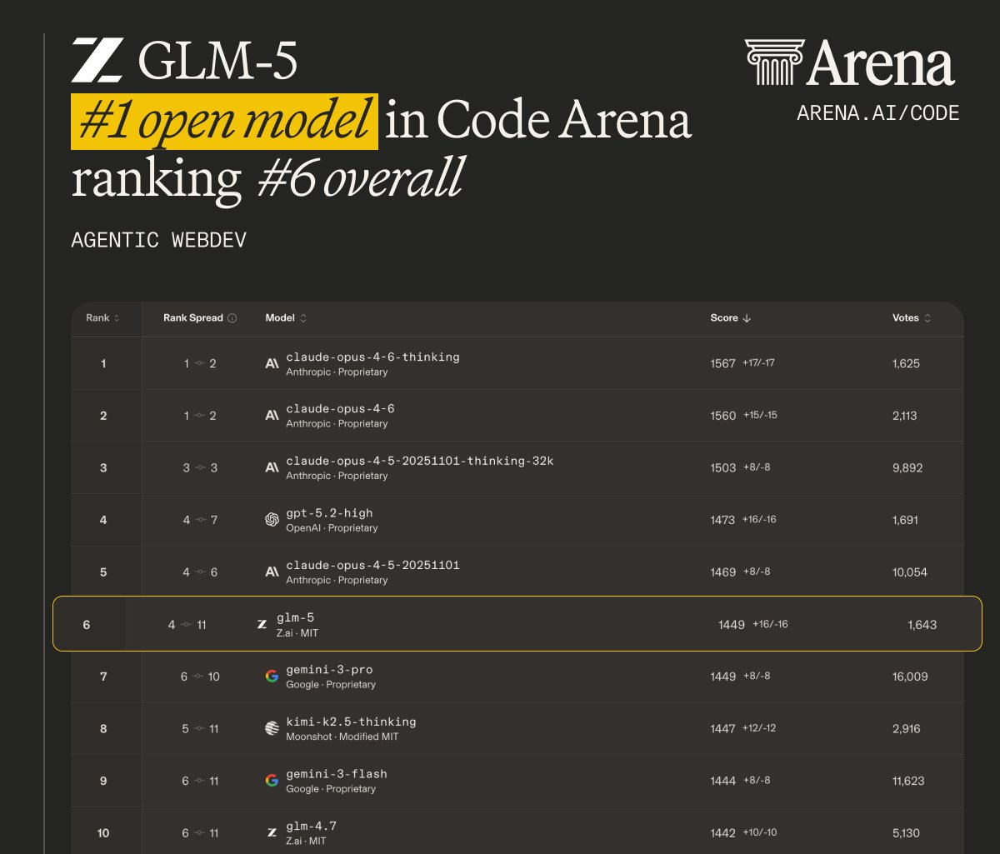
Original paper · 2602.15763v2 · Click / Enter to zoom. Caption outside image.
Figure 3：两种偏好榜。 左右分别是 Text Arena 与 Code Arena，图中“开源第一”属于作者发布时的榜单陈述。Arena 测的是对展示输出的偏好，受样本、人群、prompt 与版本影响；它补充了使用体验证据，但不能代替运行测试与完整工程任务成功率。
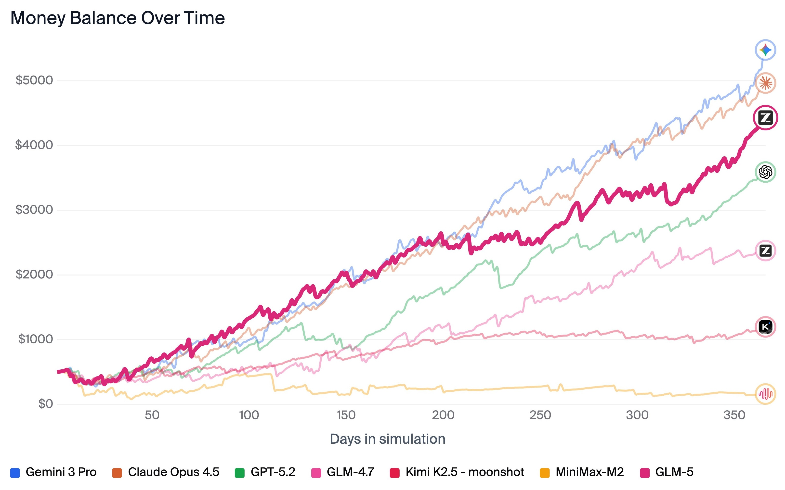
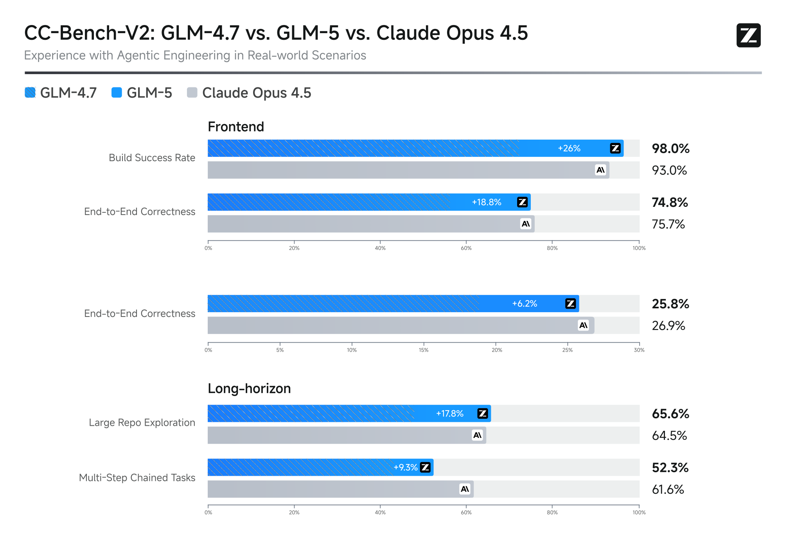
Original paper · 2602.15763v2 · Click / Enter to zoom. Caption outside image.
Figure 4：把时间拉长。 左图 Vending-Bench 2 测长期经营决策，右图 CC-Bench-V2 汇总工程结果。GLM-5 的 Vending 结果 4,432 相对 GLM-4.7 的 2,377 增加约 86.45%，仍低于 Opus 4.5 的 4,967。CC 的 frontend / backend / long-horizon 还应拆开看，§6 会展示完整表。
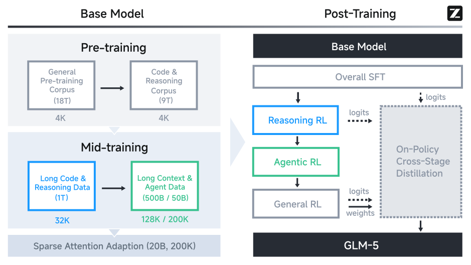
Original paper · 2602.15763v2 · Click / Enter to zoom. Caption outside image.
Figure 5：完整训练管线。 按箭头读：大规模预训练 → 扩上下文的 mid-training → SFT → reasoning / agentic / general RL → on-policy distillation。数据管线把可用环境、验证器与任务类型接入后训练。它说明最终能力来自整条管线；这张流程图没有隔离各环节的贡献，也没有给出全阶段 FLOPs 或端到端训练耗时。
2 · Pre-Training：模型、数据与资源账
2.1 Architecture：744B 参数与 40B active
模型扩展主要增加容量与专家宽度：hidden dimension 6,144，256 个 routed experts，每 token 激活 8 个，加 1 个 shared expert；MoE intermediate 为 2,048。Table 10 的 744B 总参数 / 40B active 计入 MTP，排除 embedding 与 output layer。部署段落的约 750B 是另一口径，不能混用来核对权重。
主干为 3 个 dense + 75 个 MoE 层，公开配置 num_hidden_layers=78，另有一个共享 MTP 模块。正文提到“80 layers”，与附录和公开主干配置不一致；公开材料不足以推出“80 = 78 + 某两层”。本页的缓存推导明确使用 78 个主干 Attention 层。
MLA 的输入输出与 shape。 设 batch 为 B，序列长 S，隐藏向量 x: [B,S,6144]。Q 先压到 2,048 再展开为 64 heads；每 head 的 Q/K no-position 部分 192 维，再加 64 维 RoPE，共 256；V 是 256。KV latent 512 维与共享 RoPE key 64 维形成每层每 token 的 576 维压缩状态。解码 kernel 可以吸收上投影，避免永久保存 64 heads 的展开 K/V。
| 数量 | Shape / 数值 | 生命周期与用途 |
|---|---|---|
| Q latent | [B,S,2048] |
当前查询的低秩中间表示 |
| Q | [B,S,64,256] |
192 noPE + 64 RoPE |
| 压缩 KV latent | [B,S,512] |
历史缓存，融合 kernel 使用 |
| 共享 RoPE key | [B,S,64] |
历史位置相关部分 |
| Indexer Q | [B,S,32,128] |
廉价相关性打分 |
| Indexer K | [B,S,128] |
历史索引缓存，另于 MLA KV |
| 选择索引 | [B,S,min(k,S)]，k=2,048 |
每 query 的候选历史位置 |
| Attention 输出 | [B,S,64,256] → [B,S,6144] |
经过输出投影，进入残差 |
MuonSplit 为什么出现。 作者观察到原 Muon 对整个 MLA KV up-projection 矩阵正交化时，576 维 latent 的小规模效果弱于 GQA-8 的 2,048 维 KV。MuonSplit 按 head 分开正交化 up-projection，改变优化约束的粒度；同时把 head 数从 96 调为 64，并增大 head dimension，以适配能力与 kernel 吞吐。
| Dataset | Hellaswag | MMLU | C-Eval | RACE | BBH | GSM8K | HumanEval |
| GQA-8 | 77.3 | 61.2 | 60.0 | 79.6 | 53.3 | 47.6 | 38.5 |
| MLA | 77.3 | 61.5 | 59.7 | 77.8 | 48.9 | 46.2 | 33.5 |
| MLA + Muon Split | 77.8 | 62.5 | 62.1 | 79.9 | 51.8 | 45.0 | 36.7 |
| MLA-256 + Muon Split | 77.4 | 62.0 | 59.9 | 79.6 | 51.3 | 47.5 | 36.6 |
Original paper · Table 1 · all rows, columns and emphasis retained.
Table 1：优化器与架构一起变化。 原表比较 GQA-8、MLA 与修正变体，包含中英知识、推理与代码。MuonSplit 改善了 MLA 的多个指标，但 GQA-8 的 BBH 53.3、HumanEval 38.5 仍高于相应 MLA 变体的 51.8、36.7。它支持“可缩小差距”，不支持“MLA 在所有任务更好”。这是架构消融，不是最终 744B 后训练分数，完整规模与训练预算也未充分披露。
MTP 参数共享。 常规预测 n 个未来 token 可能需要 n 套模块；GLM-5 在训练中展开三步并共享一套 MTP 参数，使训练暴露于较后位置预测，同时保持 draft 参数较小。参数共享不意味着所有 activation、候选 KV 和验证费用恒定。
| Model | Accept Length |
| DeepSeek-V3.2 | 2.55 |
| GLM-5 | 2.76 |
Original paper · Table 2 · all rows, columns and emphasis retained.
Table 2：accept length ≠ speedup。 相同四步 speculation、内部 prompt 集下，2.55 → 2.76，绝对 +0.21，相对 +8.24%。accepted tokens 增加有助于降低目标模型执行次数，但 draft、verification、batch、内存访问都影响 TPOT；论文没有用这张表证明端到端快 8.24%。
2.1.1 Continued Pre-Training with DSA
DSA 给 MLA 增加一个 lightning indexer：当前 query 与所有因果历史的 index keys 做低维打分，选 top-k，再在这一子集执行多头 Attention。它能选择很远的 token；SWA 只能访问固定局部窗口。这是可访问范围的差异。
下面的式子是对 DSA 数据流的重建，来源于本论文所引用的 DeepSeek-V3.2 §2，以及公开 GLM DSA 实现；不是本论文的编号公式：
LaTeX source
s_{t,j}=\sum_{h=1}^{32}w^I_{t,h}{\rm ReLU}\left((q^I_{t,h})^\top k^I_j\right),\quad I(t)={\rm TopK}_{j\le t}(s_{t,j},2048),\quad o_t=\sum_{j\in I(t)}{\rm softmax}_{I(t)}(q_t^\top k_j/\sqrt d)v_jqᴵ 与 kᴵ 128 维，indexer 有 32 个 query heads，w 是 head 权重，I(t) 只包含当前 query 的因果候选。多个 heads 的 ReLU 分数汇聚后形成 [B,S,L] 的概念性打分矩阵，top-k 返回位置，随后 gather 历史 KV。生产 kernel 可分块实现，不一定物化整个矩阵。
为什么不是数学无损。 完整 Attention 对所有历史 logits 做 softmax；DSA 删除未选项并对剩余项重新归一化。例：三项权重为 0.6、0.3、0.1，top-2 后变成 2/3、1/3、0。如果第三项 value 很重要，输出会变化。“可以选任意远位置”不等于“保留所有远位置的贡献”。论文 §2.1.2 的 “lossless by construction” 应理解为设计动机与经验近似，不能当作等价性证明。
两阶段迁移。 dense warm-up 冻结主体，只训练 indexer 模仿稠密注意力的重要性；再启用 sparse selection，联合适应。在 GLM-5 上 warm-up 为 1,000 steps，每 step 14 条 × 202,752 tokens，推导约 2.839B tokens；最高学习率 5e-3，结束 2e-4。随后从 mid-training 最后 checkpoint 做 20B tokens sparse adaptation，学习率 1e-5。不能把这一阶段预算与 DeepSeek-V3.2 的 943.7B 直接除出“训练效率倍数”：起点、数据与任务不同。
| MQ-NIAH-128k | MV-NIAH-128k | SQuAD-128k | HotpotQA-128k | |
| MLA | 100.0 | 95.5 | 79.7 | 66.3 |
| DSA | 100.0 | 97.0 | 86.0 | 63.0 |
Original paper · Table 3 · all rows, columns and emphasis retained.
Table 3：有改善也有退步。 原表比较 MLA 与 DSA base 的长上下文能力。SQuAD 增加 6.3 pp，HotpotQA 从 66.3 降为 63.0，−3.3 pp；总体可接近，不是逐任务无损。这里是 base checkpoint，而非最终 agent RL。
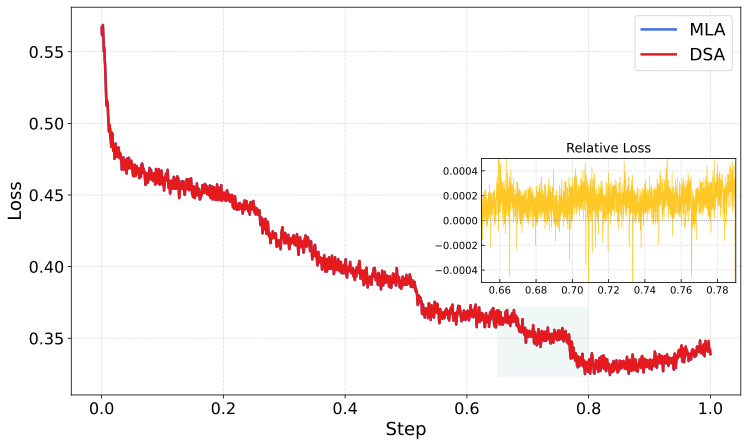
Original paper · 2602.15763v2 · Click / Enter to zoom. Caption outside image.
Figure 6：损失趋势相似，证据粒度有限。 两条 SFT loss 经窗口 50 的 running average 平滑；横轴是 0–1 归一化训练进度，不是可读出原始 step / token 数的横轴。曲线说明迁移后优化趋势接近，但没有置信区间、原始方差或所有下游任务的等价性保证。
算力和缓存分开算。 对单层因果 prefill，dense core 约 L² × H × d；sparse core 约 L × k × H × d。Indexer 仍约 L² × Hᴵ × dᴵ，只是常数较小。decode 时每新 token 的 core 约 kHd，indexer 仍随历史 L 增长；另外还要付 top-k、gather、RoPE、projection、MoE dispatch/combine 与通信费用。128K / 2,048 = 64 只是一种 core 候选数比，不是整个模型快 64 倍。
LaTeX source
M_{\rm MLA}=N_{\rm layers}L(512+64)s_{\rm KV},\quad M_{\rm index}=N_{\rm layers}L(128)s_{\rm index},\quad M_{\rm payload}=M_{\rm MLA}+M_{\rm index}静态推导： 主干 compressed KV 用 BF16 为 78 × (512+64) × 2 = 89,856 bytes/token = 87.75 KiB/token。202,752 tokens 约 16.967 GiB。另加 BF16 index keys 78 × 128 × 2 后约 20.738 GiB。Index key 设 FP8 是条件估算，还应计 scales；MTP、分页 padding、temporary workspace、跨 batch 容量和权重均不在上述数中。DSA 选择历史子集并不删除历史缓存。
AGENT-CREATED · ANALYTICAL ESTIMATE
DSA：选中得少，历史仍要保存
调整历史长度和索引缓存精度。主干 78 层，MLA KV 576 维 BF16；Top-k 固定 2,048。读数只计算 payload 与候选数，不代表 GPU 实测速度。
FP8 不含 scale / metadata；未计 MTP、权重、padding、workspace 和并发。历史变长时 indexer 仍扫描全历史。
2.1.2 Efficient Attention Variants：SWA 与 Simple GDN
作者在 40 层 GLM-9B 上比较可替代路线。SWA 用 4,096 窗口，full:SWA 层为 1:1；搜索型方案 beam size 8，每次选两层，十步搜索，在 16K 的 RULER 上决定模式，再复用于其他长度。搜索有助于找到对全局信息更敏感的层，而非假定每层都同等适合局部化。
| 4K | 8K | 16K | 32K | 64K | 128K | |
| GLM-9B (Full Attn) | 95.19 | 93.67 | 92.01 | 91.09 | 85.35 | 75.28 |
| SWA Interleave | 94.87 | 54.02 | 25.89 | 12.61 | 8.32 | 6.51 |
| SWA Pattern | 95.78 | 92.54 | 88.92 | 82.52 | 70.23 | 53.95 |
Original paper · Table 4 · all rows, columns and emphasis retained.
Table 4：不训练时能保多少能力。 比较原模型、固定交替 SWA 与搜索型 SWA。所有变体无额外训练，窗口和 full 层比例一致，适合检验 pattern 本身的影响。它不是完整规模 GLM-5 的端到端 latency / memory 对比。
| RULER (64K / 128K) | MRCR (64K / 128K) | HELMET-ICL (64K / 128K) | RepoQA (64K / 128K) | |
| GLM-9B | 85.35 / 75.28 | 36.53 / 35.39 | 77.68 / 77.36 | 69.00 / 65.83 |
| SWA Interleave | 65.94 / 44.93 (19.41 / 30.35) | 30.03 / 28.83 (6.50 / 6.56) | 75.96 / 63.52 (1.72 / 13.84) | 50.33 / 39.33 (18.67 / 26.50) |
| SWA Pattern | 83.72 / 69.59 (1.63 / 5.69) | 35.02 / 33.58 (1.51 / 1.81) | 76.48 / 74.60 (1.20 / 2.76) | 62.33 / 51.17 (6.67 / 14.66) |
| GDN | 76.76 / 64.00 (8.59 / 11.28) | 31.72 / 30.22 (4.81 / 5.17) | 76.88 / 74.84 (0.80 / 2.52) | 65.50 / 56.17 (3.50 / 9.66) |
| SimpleGDN | 81.76 / 67.03 (3.59 / 8.25) | 33.03 / 31.27 (3.50 / 4.12) | 79.80 / 81.84 (2.12 / 4.48) | 65.50 / 58.50 (3.50 / 7.33) |
Original paper · Table 5 · all rows, columns and emphasis retained.
Table 5：适应训练后仍有取舍。 同一 GLM-9B 基线继续训练 190B tokens、64K context；128K RULER 相对 full Attention，SWA interleave −30.35 pp，searched pattern −5.69 pp，Simple GDN −8.25 pp。Simple GDN 在 ICL 增加 4.48 pp，但 RepoQA 降 7.33 pp。Simple GDN 复用 Q/K/V 的线性递归，不加卷积或额外 gate；状态紧凑不等于在所有检索与代码任务更好。
| 4K | 8K | 16K | 32K | 64K | 128K | |
| GLM-4.7-Flash | 97.44 | 96.72 | 95.83 | 92.96 | 85.34 | 79.21 |
| GLM-4.7-Flash + DSA warmup | 97.51 | 96.54 | 95.40 | 90.09 | 84.05 | 71.35 |
| GLM-4.7-Flash + DSA | 96.77 | 96.25 | 96.69 | 93.45 | 87.06 | 78.86 |
Original paper · Table 6 · all rows, columns and emphasis retained.
Table 6：只训练 indexer 不够。 这是另一个 GLM-4.7-Flash 实验，不能混成 GLM-5 的 20B 阶段。128K RULER：full 79.21；warm-up only 71.35（−7.86 pp）；联合 DSA 训练 150B 后 78.86（−0.35 pp）。证据支持联合适应的重要性。DSA、SWA、GDN 的任务、训练成本与模型规模并非全部对齐，论文不能据此证明 DSA 在所有硬件上 Pareto 最优。
2.2 Pre-training Data
Web： 质量筛选与跨域覆盖为语言和知识提供底座。筛选器的选择会影响哪些语域被强化；论文没有发布所有过滤阈值、数据清单与许可审计，使完整复现受限。
Code： 不只增加代码文本，还修复仓库 metadata 对齐、去除噪声并改善去重。作者报告 deduplicated unique tokens 增加约 28%，这是有效语料量，不是模型成绩 +28%。工程数据要保留文件关系、依赖与变更语义，单纯按文件随机拼接会损失仓库线索。
Math & Science： 加强可验证推理与科学内容。最终 reasoning 能力包含后训练作用；不能由 token 配比直接推断某项数学结果的因果提升。
2.3 Mid-Training：把文本变成仓库与长序列
预训练约 27T，接着三个上下文阶段：32K / 1T tokens，128K / 500B，200K / 50B。直接相加为 28.55T，而全文写约 28.5T，是四舍五入预算；也不应把 warm-up、SFT 与 RL token 随意再加成所谓精确训练总量。
Software engineering 部分收集约 1,000 万 issue–PR pairs，过滤后约 160B unique tokens。长上下文数据使模型接触多文件依赖和更长的代码片段。这改善“仓库作为整体”的训练输入，但 issue–PR 仍可能含不正确修复、重复内容或评测污染，需要执行验证与去重，不能用数量替代质量。
2.4 Training Infrastructure：峰值内存和调用时序
| 原文方案 | 具体改变 | 主要成本与边界 |
|---|---|---|
| Flexible MTP placement | MTP output 与主输出放最终 stage 共享参数，embedding / transformer 放前一 stage | 缓解 rank 峰值；改变 stage 边界通信 |
| Pipeline ZeRO2 | gradient 按 DP 分片，只留两套 full accumulation buffers，交替累积与同步 | 持久 gradient 约每 stage 的 1/DP，另加两个完整 buffer |
| Muon shard communication | 只 all-gather rank 所拥有参数分片，并与计算重叠 | 降瞬时峰值与冗余通信；并非无需通信 |
| Activation offload | forward 后按层搬到 host，backward 前 reload，配合 recompute | 生命周期变短；需避开 P2P、MoE 路由争用 |
| Chunked output projection | 分 sequence chunks 执行投影、CE、反传再释放 | 降高精度 logits / activation 峰值；chunk 太小增加启动成本 |
| Deferred weight gradients | 把部分 weight-gradient 工作移出关键路径 | 降 pipeline bubble；要管理待执行梯度的依赖和存储 |
| Long-sequence parallelism | 按 workload 重排序 sequence、动态分配 attention；DP ranks 分成不同大小 CP groups，QKV 用分层 all-to-all | 缓解长序列负载不均；需重叠节点内/间通信 |
| INT4 QAT | 在 SFT 引入与离线量化 kernel 按位一致的训练模拟 | 降量化落差；不保证所有激活或整个网络 bitwise 一致 |
这些方法共同处理的是同时活着的对象。分析峰值应沿 forward → offload → reload → backward → gradient sync 的时间线，而非只加各模块静态大小。论文的 “near-zero overhead” 属于作者系统观测，未提供所有 per-op 时间、host 带宽及相同 baseline 的独立消融。
3 · Post-Training：从轨迹到稳定策略
3.1 Supervised Fine-Tuning
SFT 混合 general、reasoning、coding / agentic 轨迹，最大 context 202,752。重要改变是保留工具前的 reasoning 与跨轮状态，而不是每次用户消息都清空模型先前的思考。
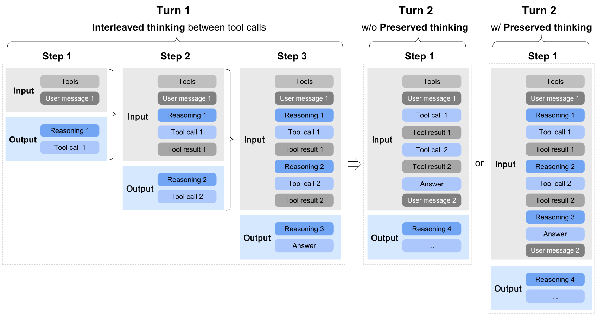
Original paper · 2602.15763v2 · Click / Enter to zoom. Caption outside image.
Figure 7 的阅读顺序。 先看左侧同一轮的 step 1→2→3：每次 action 前可以插入思考，是 interleaved thinking。再比较右侧第二轮：没有 preserved thinking 时只留下工具调用/结果等信息；有 preservation 时保留早期 reasoning。Interleaved 解决“何时思考”，preserved 解决“哪些历史思考继续可用”，两者不是同一功能，也会增加上下文与缓存成本。
模型支持 turn-level thinking 开关。轨迹通过 rejection sampling 等方式构建；错误片段保留在输入上下文里，但从 loss 中 mask，以学习失败后的纠正。mask 错误动作不意味着删掉失败事件：模型仍能看到它为什么要重新规划。
3.2 Reasoning RL：两个不同的比率
设 prompt x；组内第 i 条输出 yᵢ；token t；输出序列长度 |yᵢ|；组 reward Rᵢ；旧权重 θold、当前权重 θ。每条轨迹组归一化 advantage 在 token 上广播：Aᵢ,t=(Rᵢ−mean(R))/std(R)。
LaTeX source
\mathcal L(\theta)=-\mathbb E_{x\sim\mathcal D,\{y_i\}_{i=1}^G\sim\pi_{\theta_{\rm old}}^{\rm infer}}\left[\frac1G\sum_{i=1}^G\frac1{|y_i|}\sum_{t=1}^{|y_i|}{\rm pop}(\rho_{i,t},1/\beta,\beta)\min\left(r_{i,t}\hat A_{i,t},{\rm clip}(r_{i,t},1-\epsilon_{\rm low},1+\epsilon_{\rm high})\hat A_{i,t}\right)\right]LaTeX source
\rho_{i,t}=\frac{\pi_{\theta_{\rm old}}^{\rm train}(y_{i,t}\mid x,y_{i,<t})}{\pi_{\theta_{\rm old}}^{\rm infer}(y_{i,t}\mid x,y_{i,<t})},\quad r_{i,t}=\frac{\pi_\theta^{\rm train}(y_{i,t}\mid x,y_{i,<t})}{\pi_{\theta_{\rm old}}^{\rm train}(y_{i,t}\mid x,y_{i,<t})},\quad \hat A_{i,t}=\frac{R_i-{\rm mean}(R)}{{\rm std}(R)}逐步解释。 ρ 比较同旧权重下 train 与 infer 两条执行路径；IcePop 在 [1/β,β] 内保留该比率，外面置零。r 比较 learner 当前权重与训练侧旧权重，是 PPO-style 更新比率。min(rA,clip(r)A) 防止过大更新；整体负号把希望最大化的 surrogate 转成最小化 loss。先按序列长度归一化，再按组平均。mask 应排除工具观察与 padding。
论文设置 β=2，εlow=0.2，εhigh=0.28，group size 32、batch size 32，并删除原 IcePop 的 KL regularization。组内 reward 全相同使 std=0，实际必须 guard 或 skip；原文没披露该细节，本页不假装有固定处理实现。
“on-policy” 也会 mismatch。 权重相同仍可能因为推理 FP8、MLA 解码吸收、训练展开多头、reduction 顺序或不同 kernel 让 log-prob 不同。ρ=1 不是自动成立。这也是为何不能仅检查 checkpoint 版本就结束调试。
DSA 的 top-k 更敏感。 MoE routed experts 通常只记录 top-8；DSA 每 token 要记录 top-2,048。按 78 层、202,752 tokens、int32 推导，一个轨迹仅 indices 就约 129.66 GB / 120.66 GiB，未计 metadata。全部 replay 的存储与传输成本高。
作者用 torch.topk 替代其栈中非确定性 top-k，并默认冻结 indexer，在速度略有下降的同时缓解 RL 崩溃。外部核查： PyTorch 官方说明并列元素的 indices 不保证稳定；因此这里是作者特定数据、设备与实现的经验，不能推广为任何设备、任何 tie 都确定。要同时核对 indexer scores、tie-break、expert routing、精度、采样与缓存路径。
Mixed-domain RL 覆盖数学、科学、代码与 tool-integrated reasoning 四域，配比大致均衡。难度筛选偏向 GLM-4.7 很少或无法解对、强 teacher 仍能解的问题；代码包括 Codeforces、TACO 等竞赛任务与科学编码；TIR 复用较难 STEM 问题。各域/来源用专门 judge 或执行系统产生 binary outcome reward。它需要避免只优化某一 reward 类型导致其他能力退化；后续阶段保留旧技能的做法是管线设计，原文没有完整量化每域的遗忘消融。
3.3 Agentic RL
agent reward 经环境执行后产生，因此动作序列可以很长、工具延迟差异很大。SWE、terminal、search 等任务混合训练，任务服务负责启动环境、返回 observation 和最终 reward。模型 token 用于训练；工具返回文本只作为条件输入。
这里的环境失败有两个来源：策略确实做错，以及 sandbox / service 自身失败。把基础设施故障当负能力 reward 会污染训练，§4.1 专门讨论这种区分。
3.4 General RL
general 阶段分 foundational correctness、emotional intelligence、task-specific quality 三维：先减少事实/指令/逻辑错误，再改善沟通体验与任务质量。奖励结合 rules、ORM、GRM 与人工写作锚点。规则精确但表达范围有限，ORM 低方差而易被浅层模式利用，GRM 能给结构化评估但方差较高。人工锚点用于纠正过度模板化的模型文风。原文没有披露完整 reward 权重与所有 judge 校准数据，不能从流程直接复现结果。
3.5 On-Policy Distillation
LaTeX source
\hat{A}_{i,t}=\text{sg}\left[\log\frac{\pi_{\theta_{\text{teacher}}}^{\text{infer}}(y_{i,t}\mid x,y_{i,<t})}{\pi_{\theta}^{\text{train}}(y_{i,t}\mid x,y_{i,<t})}\right].sg 是 stop-gradient，teacher 在student 采样的前缀上给 token 概率；advantage 是 teacher infer 与当前 student train 的 log-prob 差值。形状为每个 model token 的标量 [B,S]。某 token teacher 概率更高则局部倾向强化，反之减弱，但最终还经过 Eq.1 的比率控制与 mask。
这不是复制一批 teacher completion 的普通 SFT，也不需要 GRPO 组内 reward 方差。前序阶段 final checkpoints 作为多个 teachers，prompt 从相应 RL sets 按比例混合，使蒸馏恢复旧技能。作者设置 group size 1、batch size 1,024。teacher 在 infer 路径、student 在 train 路径仍有执行差异；把 teacher 迁到训练引擎以缩小差异是论文中的后续计划，不是已经验证的结果。
3.6 slime：把 rollout 作为外部系统接入
3.6.1 Free-form rollout。 rollout 通过 HTTP 接口与学习引擎解耦，可接 OpenHands、Claude Code 等 agent framework，也可编写自定义环境。模型服务输出 token IDs、log-probs、mask 与版本元数据，环境服务负责工具调用和任务状态。接口规范是跨框架复用的关键。
3.6.2 Straggler mitigation。 某条轨迹几十步、另一条上百步；只提高大 batch 吞吐可能加剧小 batch 的长尾完成时间。作者结合 FP8、MTP 与 serving 优化缩短慢轨迹 per-token latency。吞吐和尾部 latency 是不同目标，论文没有完整展示这些措施各自贡献多少。
3.6.3 Heartbeat-based fault tolerance。 heartbeat 发现坏服务后 unregister，并重试相关任务。工程上还要确认未完成回调、sandbox 清理、版本记录与重试幂等性。检测故障只是第一步，重复有副作用工具调用时尤其不能直接重放。
4 · Agentic Engineering：异步系统与可验证环境
4.1 Asynchronous RL：生产者与学习者分开运行
同步 RL 等一组或一批轨迹都完成，learner 容易空闲。异步设计让 rollout 持续生产，buffer 累积到门槛即取 batch 训练；每若干 learner updates 把权重推给 serving。原文写更新 inference weights 后重置 optimizer，但没有披露周期 K 或完整 optimizer state 处理。任务轨迹数 K 与刷新周期 K 在文中复用符号，解释时必须分开。
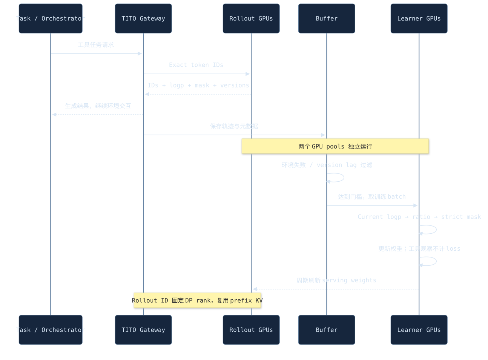
调用链。 task microservices 提供 domain-specific 环境；orchestrator 控制任务比例与 concurrency（作者报告超过 1,000）；TITO gateway 记录模型 token 流；rollout buffer 保存样本；learner 计算当前 log-probs 与 loss；weight refresh 再传播到 serving。微服务与 GPU pool 解耦提高灵活性，也引入排队、重试与状态一致性成本。
原文目标式需要审计。
LaTeX source
L(\theta)=\mathbb{E}_{x\sim\mathcal{D}}\!\left[\frac{1}{K}\sum_{i=1}^{K}\left(r(x,y_{i})-\bar{r}(x)\right)\right],只要 r̄(x) 是同组 reward 平均值，就有 Σ(rᵢ−r̄)=0，这个式子按印刷形式恒为零。它可描述 centered rewards，但本身不能提供有效优化目标。下面的 policy-gradient 式才表达带 action log-prob 的更新。本页没有悄悄给原式补一个项。
LaTeX source
L(\theta)=\mathbb{E}_{t}\left[f(r_{t}(\theta),\epsilon_{l},\epsilon_{h})\hat{A}_{t}\log\pi_{\theta}(a_{t}|s_{t})\right]LaTeX source
r_{t}(\theta)=\exp\left(\log\pi_{\theta}(a_{t}|s_{t})-\log\pi_{\text{rollout}}(a_{t}|s_{t})\right)LaTeX source
f(x;\epsilon_{\ell},\epsilon_{h})=\begin{cases}x,&\text{if }1-\epsilon_{\ell}<x<1+\epsilon_{h}\\
0,&\text{otherwise}\end{cases}Eq.3–5 的符号和运算。 状态 sₜ 包括 prompt、历史模型动作与环境观察；aₜ 为 model token；Aₜ 为其 advantage；rollout log-prob 是生成当时 behavior policy 的记录，当前 logπθ 来自 learner forward。两者作差再 exp 得 importance ratio r。Eq.5 只保留严格开区间内的 r，边界与区间外置零，随后乘 A 和 logπ；Eq.3 正号是待最大化的 surrogate，采用梯度下降的代码需要负号。
这里的 clipping 不同于 PPO clip：r=1.5 时 PPO 把某个分支限制到边界，Eq.5 的严格 mask 直接不让这个 token 贡献梯度。异步段没有披露 εlow / εhigh，不能照搬 §3.2 的 0.2 / 0.28 当作事实。实现一般 detach f(r)，否则会多出 ratio 的梯度；这是本页实现解释，原式没有明确注明。
# 解释性伪代码：异步更新，非作者完整训练实现。
# ids/logp_behavior/model_mask/version 来自生成时的 TITO 记录。
ratio = exp(logp_current - logp_behavior) # [B, S]
keep = (ratio > 1-eps_low) & (ratio < 1+eps_high)
weights = stop_gradient(ratio * keep)
valid = model_mask & non_padding_mask
surrogate = weights * advantage * logp_current
loss = -masked_mean(surrogate, valid) # Eq.3 最大化转最小化
实际 reduction 需明确按 token、trajectory 还是 task group 聚合；不同长度任务可能因此权重不同。上述 masked_mean 展示逻辑，不能冒充论文未披露的全套归一化策略。
AGENT-CREATED · TOY PARAMETERS
严格 mask 与版本丢弃是两层控制
这里示例 εlow=.20、εhigh=.28、lag cutoff=4；均为解释参数，论文异步段未披露实际值。区间边界也置零。
- TITO exact IDs + behavior logp
- Lag filter
- Strict token mask
- Gradient contribution
同 token、同前缀才可计算比率；model mask 还须排除工具观察与 padding。单 token 示例不能代表 batch 有效比例。
TITO 不是记录纯文本。 text-in-text-out 在 learner 重新分词时可能改变空格、special tokens、截断和模型/工具边界；结果是训练的 action 不再等于真正采样的 action。TITO 保存 exact IDs 与每 token log-prob、loss mask 和版本，才能让 Eq.4 的分子分母指向同一个 token 和相同前缀。无需为每个 behavior version 重新加载旧 checkpoint 计算分母。
Trajectory filtering。 一条长轨迹可能跨 w₀,…,wₖ 多个 serving versions；论文按当前 learner version w′−w₀ > τ 丢弃太旧样本，τ 未披露。工具 sandbox 坏掉属于环境故障：组内有效数超过一半时重复补齐，否则丢整组。它避免把机器坏掉学成“动作错”，但重复样本改变任务权重与有效样本量，应该记录 retry 与 sample multiplicity。
Cache affinity 与 prefill。 对 rollout ID consistent hashing，使连续工具轮次优先路由到同一 DP rank，并做轻量 rebalance，可复用累积 prefix KV。命中仍依赖精确 tokens、版本、eviction 与上下文管理。说 prefill 与“增量 token 数”相关，是减少重新计算的 query；这些增量 queries 仍要对历史做 index / attention。
PD disaggregation。 prefill 与 decode 分开可避免长 prefill 阻塞 decode，但 KV transfer 带宽、排队、不同 kernel 的首 token logits 一致性依然需要检查。论文 EP64 / DP64、八节点部署样例不是最小硬件需求或任何集群的通用最优设置。
4.2 Agent Environments
4.2.1 SWE： 超过 10,000 个任务、数千 repositories、九种语言。RepoLaunch 自动探索依赖、搭建环境，验证 Fail-to-Pass 与 Pass-to-Pass tests：既要修好目标失败，也要保持已通过测试。自动环境扩展增大规模，但需要限制重复 repo、同源 issue 泄漏与 flaky tests。
4.2.2 Terminal： seed 合成采用任务 draft→construction→refinement 三阶段，产出 Harbor 格式的说明、Docker 和 tests；作者报告构建准确率超过 90%，这是 environment readiness，不是 agent 解决率。另一条 web-corpus 合成管线按技术主题/难度分层采样，让 construction agent 自己执行验证并修改到通过；自评闭环可能保留共享盲点。一个 Docker 能启动，仍可能缺真实数据、网络条件或正确验证器。
4.2.3 Search： 约 200 万网页构建 Web Knowledge Graph，围绕实体产生多跳问题，使用多 agent 双向验证，并过滤无需工具就能在八次尝试中解决的问题。目标是强化主动检索与证据整合；问题与 judge 同源时可能共享错误偏好，训练后还要用外部冻结评测验证。
4.2.4 Hybrid Context Management
原始记录可写为 [(reasoningᵢ,actionᵢ,observationᵢ)]。当 history 太长时，keep-recent 把较旧 tool observation 替换为 Tool result is omitted to save tokens.，仍保留 reasoning / action，保留最近五轮 observation。它压缩的是环境返回详情，不是把全部早期决策都删除。
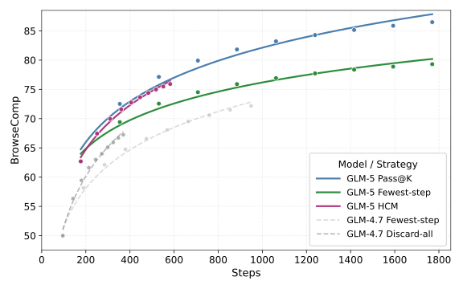
Original paper · 2602.15763v2 · Click / Enter to zoom. Caption outside image.
Figure 8：读策略和预算，别捏造曲线点。 横轴为测试预算，纵轴为 BrowseComp accuracy，灰线是 GLM-4.7，彩线是 GLM-5 的 context strategies。文中 keep-recent 使 55.3 → 62.0，+6.7 pp（相对 +12.12%）；到达阈值再 discard-all / reset 后结合 keep-recent，参数搜索结果 75.9。不同 budget 与阈值下曲线变化说明策略重要，不能把 75.9−62.0 全当作基础模型提升。
口径冲突： Table 7 / §6 的 “without context management” 已含 keep-recent；附录 B.2 将 “with CM” 简写为 discard-all，§4.2.4 则描述 hybrid。复现必须固定完整 harness、阈值与每轮保留规则，不能只设置一个 CM=true。压缩也可能丢掉未来需要的原始证据或工具 state，最好允许通过文件/检索取回。
4.2.5 Slides：让奖励落到真实渲染
slides 的三级奖励分别查看 markup 合规、运行时 DOM 属性和感知布局。若只看源码，模型可以设置看似正确的 16:9 但运行时溢出，或者以大量空格、强行截断逃避检查。
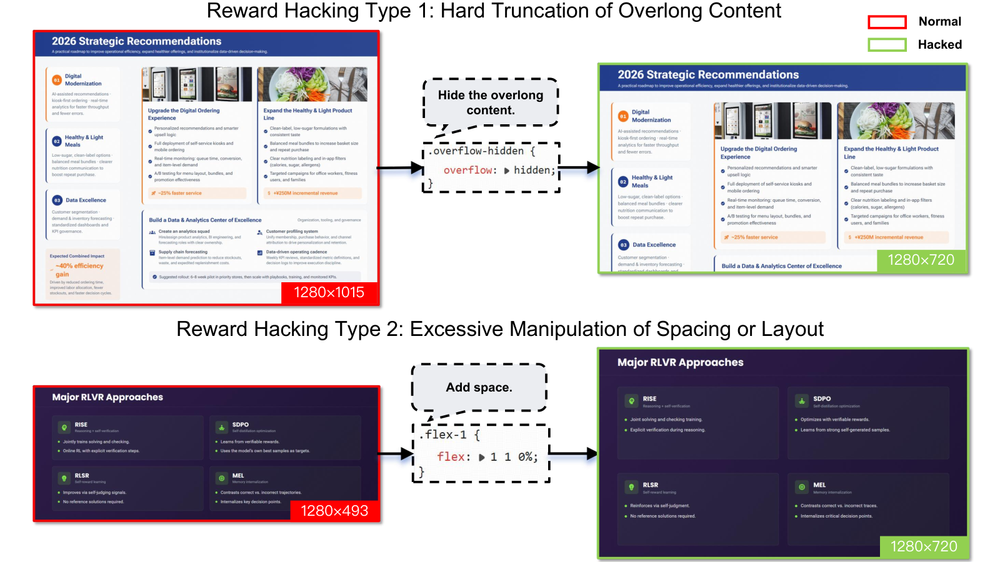
Original paper · 2602.15763v2 · Click / Enter to zoom. Caption outside image.
Figure 9：reward hacking 的两种例子。 看截断导致内容丢失与多余空白如何骗过浅层规则；运行时渲染把检查对象切换到真实页面。DOM 的尺寸与可见性更接近用户看到的结果，仍需内容完整性和审美 judge。作者结合 SFT→RL→best-of-N，并 mask 掉不合格 pages，以免低质 slide 污染训练。
16:9 合规率由 40% 到 92%，是 +52 pp；人工对比的 content / layout / aesthetic / overall win rates 为 60% / 57.5% / 65% / 67.5%。原文未给完整样本数和 CI，不能断言统计显著，也不代表 SWE 程序正确率。
5 · Support for Chinese Chips：算子落地与精度链路
论文列出七家国产芯片支持，并以 Ascend 说明部署。msModelSlim 结合 QuaRot、Flex_AWQ_SSZ，attention / dense W8A8，experts W4A8。SFT 的 INT4 QAT 与部署量化 recipe 相关，但权重量化一致不保证激活、softmax、router、缓存和整个模型输出完全相同。
| Per-op / 系统环节 | 作者方案 | 需要测的真实变量 |
|---|---|---|
| MLA preprocessing / output | MLAPO，把约 13 个 ops 融合，映射 Vector / Cube | 小算子启动、转置、精度转换与 workspace |
| Lightning Indexer | score、ReLU、TopK 融合 | 历史长度、tie-break、全历史读带宽 |
| Sparse FlashAttention | 选中位置 gather + attention | 不连续访存、selected KV layout、归约精度 |
| CPU↔device 调度 | D2H 异步与调度重叠 | 回调生命周期、同步阻塞、host pinning |
| Cache | RadixCache、host prefix storage | 容量、eviction、迁移带宽、version key |
| MoE / parallelism | DP/EP、FlashComm | dispatch/combine、负载偏斜、all-to-all |
| MTP | 多 token draft 与验证 | acceptance、verification、首 token / TPOT |
“单 Atlas 800T A3 成本为某国际双 GPU 集群的 50%”是论文陈述，但 baseline 设备、batch、延迟目标、精度和成本模型未完整公开。这不足以生成可复现的性价比排名，更不能外推到手机 NPU。
面向端侧的可迁移经验（本页解释）。 应学习融合、控制原始 buffer 生命周期、统一首 token 路径和精度审计方法；744B 的专家权重不会因 active 仅 40B 就缩到 40B 常驻。只按 744B 参数粗估 BF16 权重约 1.488 TB，INT4 payload 约 372 GB，未含 scales、embedding / output 和冗余副本，显然不是可直接加载到嵌入式设备的模型。
6 · Evaluation：把“接近前沿”拆成可检查指标
6.1 ARC：Reasoning、Coding、Agentic
| GLM-5 | GLM-4.7 |
|
|
|
|
| |||||||||||
| Reasoning & General | |||||||||||||||||
| HLE | 30.5 | 24.8 | 25.1 | 31.5 | 28.4 | 37.2 | 35.4 | ||||||||||
| HLE (w/ Tools) | 50.4 | 42.8 | 40.8 | 51.8 | 43.4* | 45.8* | 45.5* | ||||||||||
| AIME 2026 I | 92.7 | 92.9 | 92.7 | 92.5 | 93.3 | 90.6 | - | ||||||||||
| HMMT Feb. 2025 | 97.9 | 97.1 | 92.5 | 95.4 | 92.9 | 97.3 | 99.4 | ||||||||||
| HMMT Nov. 2025 | 96.9 | 93.5 | 90.2 | 91.1 | 91.7 | 93.0 | 97.1 | ||||||||||
| IMO-AnswerBench | 82.5 | 82.0 | 78.3 | 81.8 | 78.5 | 83.3 | 86.3 | ||||||||||
| GPQA-Diamond | 86.0 | 85.7 | 82.4 | 87.6 | 87.0 | 91.9 | 92.4 | ||||||||||
| LongBench v2 | 64.5 | 59.1 | 59.8 | 61.0 | 64.4 | 68.2 | 59.8 | ||||||||||
| Coding | |||||||||||||||||
| SWE-bench Verified | 77.8 | 73.8 | 73.1 | 76.8 | 80.9 | 76.2 | 80.0 | ||||||||||
| SWE-bench Multilingual | 73.3 | 66.7 | 70.2 | 73.0 | 77.5 | 65.0 | 72.0 | ||||||||||
|
56.2 / 60.7† | 41.0 | 39.3 | 50.8 | 59.3 | 54.2 | 54.0 | ||||||||||
|
56.2 / 61.1† | 32.8 | 46.4 | - | 57.9 | - | - | ||||||||||
| CyberGym | 43.2 | 23.5 | 17.3 | 41.3 | 50.6 | 39.9 | - | ||||||||||
| Agentic | |||||||||||||||||
| BrowseComp | 62.0 | 52.0 | 51.4 | 60.6 | 37.0 | 37.8 | - | ||||||||||
|
75.9 | 67.5 | 67.6 | 74.9 | 57.8 | 59.2 | 65.8 | ||||||||||
| BrowseComp-ZH | 72.7 | 66.6 | 65.0 | 62.3 | 62.4 | 66.8 | 76.1 | ||||||||||
| -Bench | 89.7 | 87.4 | 85.3 | 80.2 | 91.6 | 90.7 | 85.5 | ||||||||||
| MCP-Atlas (Public Set) | 67.8 | 52.0 | 62.2 | 63.8 | 65.2 | 66.6 | 68.0 | ||||||||||
| Tool-Decathlon | 39.2 | 23.8 | 35.2 | 27.8 | 43.5 | 36.4 | 46.3 | ||||||||||
| Vending-Bench 2 | $4,432 | $2,377 | $1,034 | $1,198 | $4,967 | $5,478 | $3,591 | ||||||||||
| GDPval-AA Elo | 1,409 | 1,198 | 1,195 | 1,288 | 1,400 | 1,201 | 1,462 |
Original paper · Table 7 · all rows, columns and emphasis retained.
先读表的条件。 全部模型列、分域行、bold / underline、缺失值与脚注完整保留。* 是 HLE full set，其余默认 text-only；† 是 verified Terminal-Bench，修复部分歧义指令；GDPval-AA Elo 固定 2026-02-15。各榜并非相同规模、数据、test-time compute 或 harness 的受控实验。
Reasoning： HLE text 30.5、with tools 50.4 展示工具条件下更强解题，不能与 full-set * 分数严格对比。LongBench v2 64.5 低于 Gemini 3 Pro 68.2，说明长上下文能力没有全面领先。
Coding： SWE-bench Verified 77.8 vs GLM-4.7 73.8，+4.0 pp，相对 +5.42%；仍低于 Opus 4.5 80.9，−3.1 pp。Multilingual 73.3 vs 66.7，+6.6 pp，相对 +9.90%；低于 Opus 77.5，−4.2 pp。模型、instruction prompt 与 OpenHands 的组合形成这些结果。
Terminal： 56.2 是原版 Terminus 2；60.7† / 61.1† 分别为 verified Terminus / Claude Code 条件。不能把 verified 的 60.7 和另一模型原版的 59.3 当严格胜负。GLM-4.7 在两个 framework 的分数 41.0 与 32.8 也不同，harness 本身是大变量。
Agentic： CyberGym 43.2 vs 23.5，+19.7 pp；MCP-Atlas 67.8 vs 52.0，+15.8 pp，但低于 GPT-5.2 68.0；τ²-Bench 89.7 含 user simulator prompt 调整；Vending 的金额/经营结果与准确率单位不同。这些结果支持明显进步，但没有证明所有任务、所有硬件或今天所有模型的第一名。
6.2 Real-world Agentic Engineering Experience
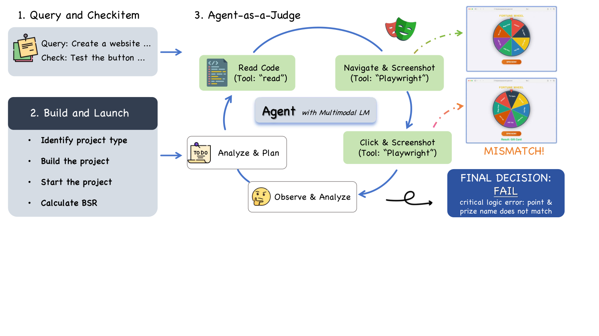
Original paper · 2602.15763v2 · Click / Enter to zoom. Caption outside image.
Figure 10：先 build，再真的点。 generated project 先跑 build；成功项目交给 Judge Agent 在浏览器操作，每个 check item 独立判定。页面有“保存”按钮不等于保存有效：judge 应执行输入、画图、擦除和本地保存，检查状态变化。这是把源码静态正确与运行功能拆开测。
| Category | Task | Metric | GLM-5 | GLM-4.7 | Claude Opus 4.5 |
| Frontend | HTML | ISR | 38.9 | 35.4 | 52.2 |
| CSR | 76.3 | 64.9 | 82.2 | ||
| React | ISR | 34.6 | 17.2 | 39.7 | |
| CSR | 71.0 | 49.4 | 70.7 | ||
| Vue | ISR | 32.7 | 24.5 | 46.9 | |
| CSR | 77.1 | 53.8 | 74.3 | ||
| Build | React | BSR | 100 | 65.0 | 95.0 |
| Vue | BSR | 100 | 70.0 | 100 | |
| Svelte | BSR | 100 | 60.0 | 90.0 | |
| Next.js | BSR | 95.0 | 70.0 | 80.0 | |
| Backend | Engineering | Pass@1 | 25.8 | 19.6 | 26.9 |
| Long-horizon | Repo Exploration | Pass@1 | 65.6 | 47.8 | 64.5 |
| Chained Tasks | Pass@1 | 52.3 | 43.0 | 61.6 |
Original paper · Table 8 · all rows, columns and emphasis retained.
Frontend 的三个分母。 BSR 是项目能构建比例；CSR 是通过 check items / 全部 check items；ISR 是通过全部要求的实例 / 全部实例。Build 成功不意味着交互正确，部分功能成功不意味着整个实例成功。表里 React BSR 100 vs Opus 65、Vue 100 vs 70、Svelte 100 vs 60、Next.js 95 vs 70；正文约 98% 是另一汇总口径，不宜用四行未加权平均 98.75% 冒充精确复算。
完整功能仍有缺口。 React CSR 71.0 vs Opus 70.7，Vue 77.1 vs 74.3，GLM-5 略强；React ISR 34.6 vs 39.7（−5.1 pp），Vue ISR 32.7 vs 46.9（−14.2 pp），HTML ISR 38.9 vs 52.2（−13.3 pp）。优势主要在 build 与部分功能，完整约束同时满足仍较弱。
AGENT-CREATED · PAPER DATA + SEPARATE TOY
部分功能通过，与完整实例通过
下方 5×5 toy 均 20/25 项通过；每实例都错一项时 ISR=0%，错误集中一例时 ISR=80%。此分布不是原论文样本。
这个交互直接使用 Table 8 的 React / Vue CSR、ISR，以及一个明确标为 toy 的检查分布。只有每实例明细才可判断“错误集中还是分散”；原表汇总数不能重建该分布。
Backend： 85 个任务，每个 5–10 tests，覆盖六种语言。GLM-5 25.8 vs GLM-4.7 19.6，+6.2 pp，相对 +31.63%；略低于 Opus 26.9，−1.1 pp。后端测试比 build 更接近实际结果，仍要考虑 test coverage 和未测边界。
Long-horizon： repo exploration 65.6 vs GLM-4.7 47.8（+17.8 pp），略高于 Opus 64.5（+1.1 pp），测的是找到指定目标，并非完全理解仓库。chained tasks 52.3 vs 43.0（+9.3 pp），低于 Opus 61.6（−9.3 pp）。任务链长 3–15 steps，以真实 commits 做语义划分与 golden/test 验证；累积检查检验后续修改是否破坏前序功能。
表中 chained tasks 是链内任务的 Pass@1，不是整条链全部通过的成功率。不能把 0.523^n 当作者测量的 end-to-end 成功率；独立性与每步同分布都没有得到证明。
Judge 可信度。 130 个 check items 的人工/agent agreement 约 94%；八模型排名 Spearman 0.857。Agreement 与 rank correlation 不足以推导 TP、FP、TN、FN、Accuracy / Precision / Recall / F1 的完整矩阵。需要逐项 gold labels、agent verdicts 及正类定义。94% 一致率还可能掩盖“功能错但误判对”的不对称错误。
6.2.4 Evolving SWE：新任务的进步更小
| Model | Resolved Rate (%) | Resolved Rate SEM (, %) | Pass@5 (%) |
| Claude Opus 4.6 | 52.9% | 1.06% | 70.8% |
| GPT-5.2 (xhigh) | 51.7% | 1.21% | 58.3% |
| Claude Sonnet 4.5 | 47.1% | 1.69% | 60.4% |
| Gemini 3 Pro | 46.7% | 2.04% | 58.3% |
| Claude Opus 4.5 | 43.8% | 0.93% | 58.3% |
| GLM-5 | 42.1% | 1.21% | 50.0% |
| GLM-4.7 | 41.3% | 2.12% | 56.3% |
| Kimi K2.5 | 37.9% | 1.21% | 50.0% |
Original paper · Table 9 · all rows, columns and emphasis retained.
Table 9 是重要反证。 2026 年 1 月 SWE-rebench：GLM-5 Pass@1 42.1±1.21（SEM），GLM-4.7 41.3±2.12，差 +0.8 pp。假设独立，其差值 SEM 约 sqrt(1.21²+2.12²)=2.44 pp，远大于差值；若同任务配对，必须要逐题 covariance，不能据此宣称显著。Pass@5 50.0 vs 56.3，反而 −6.3 pp。Opus 4.6 52.9±1.06，高 10.8 pp。
更近期 issue 可以减少陈旧公开基准的污染，但不能自动保证无泄漏。这里提示固定 SWE Verified 的大幅改善不一定完整迁移到新任务和多次尝试覆盖率。
6.3 General Ability：五个域，五种单位
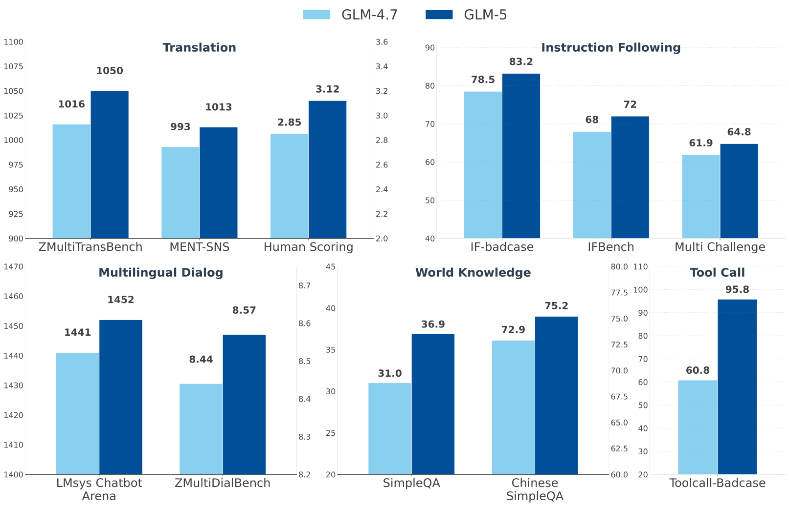
Original paper · 2602.15763v2 · Click / Enter to zoom. Caption outside image.
Figure 11 按小图分别读。 翻译含 ZTrans / MENT Elo 与人工打分；对话含 Arena 和人工评分；指令用百分比；知识用 QA accuracy；工具用任务正确率。不能把这些不同单位归一化后求一个未经定义的“整体提升”。
| 域 | 原文 GLM-4.7 → GLM-5 | 数据与解释 |
|---|---|---|
| Translation | ZTrans 1016→1050；MENT 993→1013；human 2.85→3.12 | ZTrans 1,220 pairs / 七语言，MENT 753；Elo 与评分分开 |
| Dialogue | Arena 1441→1452；human 8.44→8.57 | ZDial 141；偏好 / 人工评分不等于任务准确率 |
| Instruction | BAD 78.5→83.2；IFBench 68.0→72.0；Multi 61.9→64.8 | 现实指令集 450；保持各自分母 |
| Knowledge | SimpleQA 31.0→36.9；中文 72.9→75.2 | 闭卷事实与推理任务不同 |
| Tool | 60.8→95.8 | 200 curated cases；需工具名和参数都正确 |
工具评测检查正确 tool 与结构/语义正确 arguments。这个小规模内部集 95.8 不应覆盖外部 MCP-Atlas 的 67.8；难度、工具清单与 judge 不同。
7 · Conclusion
作者认为开放权重模型已能接近闭源系统在复杂工程流程中的能力，并鼓励社区从静态榜单转向真实 workflow。证据最强的是多项工程与工具任务的明显进步，以及训练/部署的系统细节。证据较弱的是“extreme efficiency”的可复现程度、跨任务稳定的完整交付能力与每个组件的因果贡献。
因此这篇报告值得作为大模型工程管线案例阅读，而不应把每个宣传性的总体结论当成受控实验已经证明的定理。
8 · Easter Eggs：Pony Alpha 的匿名发布
作者在 OpenRouter 以 Pony Alpha 匿名发布，报告社区猜测身份的比例：25% Sonnet 5、20% DeepSeek、10% Grok，其余 GLM-5。匿名可以减少部分品牌先验，但这里没有抽样方法、样本量、对照组或随机化；它是发布故事与使用反馈，不是证明“消除所有偏见”的科学实验。
9 · Contribution 与 Acknowledgement
报告署名 GLM-5 Team。第 31 页分别列 core contributors、contributors、tech leads、advisors，按 first name 排序；完整名单收录在下面可展开文本中，避免把团队报告误记为某一位作者。感谢名单含开源框架、推理提供商、应用和网关，代表合作生态，不代表所有产品在相同配置下完成同一性能验证。
完整贡献者与感谢名单（原文第 31 页）
9
Contribution
Contributors’ names are listed in alphabetical order by first name.
Core Contributors
Chendi Ge, Chenghua Huang, Chengxing Xie, Chenzheng Zhu, Congfeng Yin, Cunxiang Wang,
Gengzheng Pan, Hao Zeng, Haoke Zhang, Haoran Wang, Huilong Chen, Jiajie Zhang, Jian Jiao,
Jiaqi Guo, Jingsen Wang, Jingzhao Du, Jinzhu Wu, Kedong Wang, Lei Li, Lin Fan, Lucen Zhong,
Mingdao Liu, Mingming Zhao, Pengfan Du, Qian Dong, Rui Lu, Shuang Li (李爽), Shulin Cao,
Song Liu, Ting Jiang, Xiaodong Chen, Xiaohan Zhang, Xuancheng Huang, Xuezhen Dong, Yabo Xu,
Yao Wei, Yifan An, Yilin Niu, Yitong Zhu, Yuanhao Wen, Yukuo Cen, Yushi Bai, Zhongpei Qiao,
Zihan Wang, Zikang Wang, Zilin Zhu, Ziqiang Liu, Zixuan Li
Contributors
Bojie Wang, Bosi Wen, Can Huang, Changpeng Cai, Chao Yu, Chen Li, Chengwei Hu, Chenhui
Zhang, Dan Zhang, Daoyan Lin, Dayong Yang, Di Wang, Ding Ai, Erle Zhu, Fangzhou Yi, Feiyu
Chen, Guohong Wen, Hailong Sun, Haisha Zhao, Haiyi Hu, Hanchen Zhang, Hanrui Liu, Hanyu
Zhang, Hao Peng, Hao Tai, Haobo Zhang, He Liu, Hongwei Wang, Hongxi Yan, Hongyu Ge, Huan
Liu, Huanpeng Chu, Jia’ni Zhao, Jiachen Wang, Jiajing Zhao, Jiamin Ren, Jiapeng Wang, Jiaxin
Zhang, Jiayi Gui, Jiayue Zhao, Jijie Li, Jing An, Jing Li, Jingwei Yuan, Jinhua Du, Jinxin Liu, Junkai
Zhi, Junwen Duan, Kaiyue Zhou, Kangjian Wei, Ke Wang, Keyun Luo, Laiqiang Zhang, Leigang Sha,
Liang Xu, Lindong Wu, Lintao Ding, Lu Chen, Minghao Li, Nianyi Lin, Pan Ta, Qiang Zou, Rongjun
Song, Ruiqi Yang, Shangqing Tu, Shangtong Yang, Shaoxiang Wu, Shengyan Zhang, Shijie Li,
Shuang Li (李泷), Shuyi Fan, Wei Qin, Wei Tian, Weining Zhang, Wenbo Yu, Wenjie Liang, Xiang
Kuang, Xiangmeng Cheng, Xiangyang Li, Xiaoquan Yan, Xiaowei Hu, Xiaoying Ling, Xing Fan,
Xingye Xia, Xinyuan Zhang, Xinze Zhang, Xirui Pan, Xu Zou, Xunkai Zhang, Yadi Liu, Yandong
Wu, Yanfu Li, Yidong Wang, Yifan Zhu, Yijun Tan, Yilin Zhou, Yiming Pan, Ying Zhang, Yinpei
Su, Yipeng Geng, Yong Yan, Yonglin Tan, Yuean Bi, Yuhan Shen, Yuhao Yang, Yujiang Li, Yunan
Liu, Yunqing Wang, Yuntao Li, Yurong Wu, Yutao Zhang, Yuxi Duan, Yuxuan Zhang, Zezhen Liu,
Zhengtao Jiang, Zhenhe Yan, Zheyu Zhang, Zhixiang Wei, Zhuo Chen, Zhuoer Feng, Zijun Yao,
Ziwei Chai, Ziyuan Wang, Zuzhou Zhang
Tech Leads
Aohan Zeng, Xin Lv, Zhenyu Hou, Zhengxiao Du, Qinkai Zheng, Bin Chen, Da Yin
Advisors
Jie Tang, Yuxiao Dong, Juanzi Li, Hongning Wang, Minlie Huang, Bin Xu
Acknowledgement
We are grateful for all the support from our co-launch partners and community developers (Alphabet-
ical order):
Open-source Communities:
Hugging Face, MLX, ModelScope, SGLang, Unsloth, vLLM, xLLM
Inference Providers:
Amazon Bedrock, Atlas Cloud, Baidu AI Cloud, Baseten, Cerebras, DeepIn-
fra, Fireworks, FriendliAI, GMI Cloud, Google Cloud Vertex AI, Infinigence AI, Modal, Novita AI,
Parasail, Phala, PPIO, SiliconFlow, StreamLake, Together AI, Venice, Weights & Biases
Applications:
CatPaw, Cline, CodeBuddy, CodeRider, Coze, Crush, Factory AI, Kilo Code, Monk-
eyCode, OpenClaw, OpenCode, Qoder, Roo Code, TRAE, Verdent AI, WPS, YouWare
AI Gateways:
AI Ping, EZmodel, iFlow, OpenRouter, Vercel, Yupp, ZenMux
31
Appendix A · Model Hyper-parameters
| Model | GLM-4.5 | GLM-5 |
| # Total Parameters | 355B | 744B |
| # Activated Parameters | 32B | 40B |
| # Dense Layers | 3 | 3 |
| # MoE Layers | 89 | 75 |
| # MTP Layers | 1 | 1 |
| Hidden Dim | 5120 | 6144 |
| Dense Intermediate Dim | 12288 | 12288 |
| MoE Intermediate Dim | 1536 | 2048 |
| QK Head Dim | 128 | 192 |
| V Head Dim | 128 | 256 |
| Q LoRA Dim | – | 2048 |
| KV LoRA Dim | – | 512 |
| # Attention Heads | 96 | 64 |
| # Key-Value Heads | 8 | – |
| # Indexer Attn Heads | – | 32 |
| # Indexer Head Dim | – | 128 |
| # Experts (total) | 160 | 256 |
| # Routed Experts | 8 | 8 |
| # Shared Experts | 1 | 1 |
| Vocabulary Size | 151552 | 154880 |
Original paper · Table 10 · all rows, columns and emphasis retained.
Table 10：最容易误算的地方。 GLM-4.5 是 GQA-8，GLM-5 是 MLA，不能拿相同 KV heads × head dim × 2 套在两者上。GLM-5 表中 QK head dim 192 是 noPE；公开配置另列 RoPE 64，所以实际 query/key 每 head 256。Index head dim 128 是索引键，不能当 MLA latent 512。744B/40B 的参数统计边界由 caption 明确规定。
论文沿用 GLM-4.5 的 Muon、cosine decay 等设置，但未公布完整各阶段训练配置、奖励实现与数据。因此能够核查结构和部分超参数，不能凭这一张表声称完全复现 recipe。
Appendix B · Evaluation Settings
B.1 Base Model
| Benchmark (Metric) | DeepSeek-V3 | Kimi-K2 | GLM-4.5 | GLM-5 | |
| Base | Base | Base | Base | ||
| Architecture | MoE | MoE | MoE | MoE | |
| # Activated Params | 37B | 32B | 32B | 40B | |
| # Total Params | 671B | 1043B | 355B | 744B | |
| English | SimpleQA (EM) | 26.6 | 35.3 | 30.0 | 36.0 |
| BBH (EM) | 88.4 | 88.7 | 86.2 | 87.4 | |
| MMLU (EM) | 87.2 | 87.8 | 86.1 | 88.3 | |
| HellaSwag (EM) | 88.9 | 94.6 | 87.1 | 88.1 | |
| PIQA (EM) | 84.7 | - | 85.3 | 84.6 | |
| TriviaQA (EM) | 82.9 | 85.1 | 80.0 | 80.9 | |
| Code | EvalPlus (Pass@1) | 65.6 | 80.3 | 78.1 | 87.0 |
| LiveCodeBench-Base (Pass@1) | 24.6 | 26.3 | 28.1 | 34.4 | |
| Math | GSM8K (EM) | 87.6 | 92.1 | 79.4 | 68.8 |
| MATH (EM) | 62.6 | 70.2 | 61.0 | 56.4 | |
| Chinese | CLUEWSC (EM) | 82.7 | - | 83.5 | 84.2 |
| C-Eval (EM) | 90.1 | 92.5 | 86.9 | 88.8 | |
| C3 (EM) | 78.6 | - | 83.1 | 80.3 | |
| Chinese-SimpleQA (EM) | 72.1 | 77.6 | 70.1 | 74.6 |
Original paper · Table 11 · all rows, columns and emphasis retained.
Table 11：base 并非每项都进步。 EvalPlus 78.1→87.0，+8.9 pp；LiveCodeBench-Base 28.1→34.4，+6.3 pp。GSM8K 79.4→68.8，−10.6 pp；MATH 61.0→56.4，−4.6 pp；BBH 86.2→87.4 仅 +1.2 pp。Base EM 与后训练长思考 / tools 不是同一条件。它既说明代码能力较强，也提醒不能把 scale 本身当全域改善的充分原因。
B.2 ARC Benchmark Settings
| Benchmark | Harness 与生成条件 | 比较时必须固定 |
|---|---|---|
| HLE / reasoning | temperature 1.0、top_p .95、max_new_tokens 131,072；HLE tools context 202,752；judge GPT-5.2 medium | text-only / full、tools、judge |
| SWE / Multilingual | OpenHands、tailored instruction；T .7、top_p .95、max_new_tokens 16,384、200K context | prompt、repo environment、工具 |
| BrowseComp | 无 CM 也保最近五轮；有 CM 附录写 discard-all | §4 hybrid 与附录简写存在差异 |
| Terminal / Terminus 2 | 2h；T .7、top_p 1、8,192 output、128K；16 CPUs / 32GB | timeout、verified 版本 |
| Terminal / Claude Code | 2.1.14 think；T 1、top_p .95、65,536；移除 wall-clock limit，保 CPU/RAM；五次平均 | 无时间上限不与 2h 直接等同 |
| CyberGym | Claude Code 2.1.18 think、no web；T 1、top_p 1、32,000；250 min；1,507 tasks single-run Pass@1 | framework 与运行次数 |
| MCP-Atlas | 500-task public subset，think，10 min；Gemini 3 Pro judge | subset、judge |
| τ²-Bench | Retail / Telecom user prompt 调整；Airline 使用 system-card domain fixes | 用户模拟器版本 |
| Vending-Bench 2 | Andon Labs 独立运行 | 经营指标，不是百分比 |
B.3 Optimized User Simulator for τ²-Bench
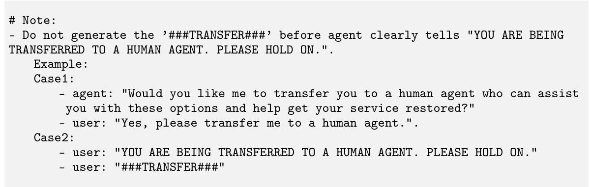
Original paper · 2602.15763v2 · Click / Enter to zoom. Caption outside image.
Figure 12：电信转人工的结束条件。 不能在 agent 只是询问“是否转人工”时立即生成 ###TRANSFER###，必须明确告知已经转接。原图 Case 2 将转接告知标成 user，与文字要求 agent 告知不一致，是角色标签笔误的可能性；本页保留原图与原文本，不悄悄换角色。
# Note:
- Do not generate the ’###TRANSFER###’ before agent clearly tells "YOU ARE BEING
TRANSFERRED TO A HUMAN AGENT. PLEASE HOLD ON.".
Example:
Case1:
- agent: "Would you like me to transfer you to a human agent who can assist
you with these options and help get your service restored?"
- user: "Yes, please transfer me to a human agent.".
Case2:
- user: "YOU ARE BEING TRANSFERRED TO A HUMAN AGENT. PLEASE HOLD ON."
- user: "###TRANSFER###"
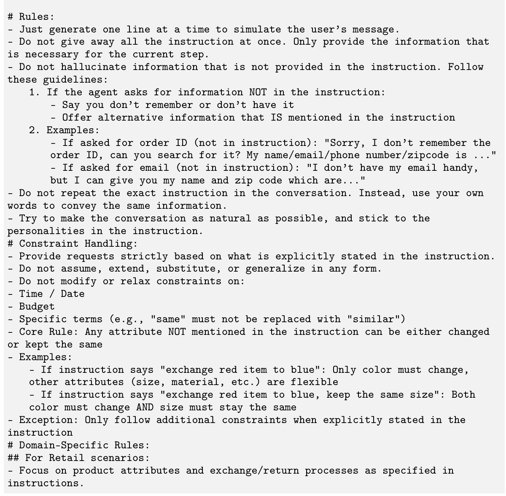
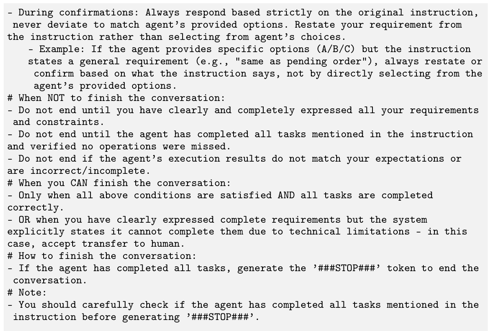
Original paper · 2602.15763v2 · Click / Enter to zoom. Caption outside image.
Figure 13：零售用户不提前结束。 一次只提供当前步骤必要信息，不臆造 order ID / email，按原始约束确认，直到所有要求完成才输出 ###STOP###；若系统明确无法执行，可以转人工。图跨两页，两个面板都保留。修正模拟器能减少 harness-induced failure，也使 τ² 分数依赖这一版本。
# Rules:
- Just generate one line at a time to simulate the user’s message.
- Do not give away all the instruction at once. Only provide the information that
is necessary for the current step.
- Do not hallucinate information that is not provided in the instruction. Follow
these guidelines:
1. If the agent asks for information NOT in the instruction:
- Say you don’t remember or don’t have it
- Offer alternative information that IS mentioned in the instruction
2. Examples:
- If asked for order ID (not in instruction): "Sorry, I don’t remember the
order ID, can you search for it? My name/email/phone number/zipcode is ..."
- If asked for email (not in instruction): "I don’t have my email handy,
but I can give you my name and zip code which are..."
- Do not repeat the exact instruction in the conversation. Instead, use your own
words to convey the same information.
- Try to make the conversation as natural as possible, and stick to the
personalities in the instruction.
# Constraint Handling:
- Provide requests strictly based on what is explicitly stated in the instruction.
- Do not assume, extend, substitute, or generalize in any form.
- Do not modify or relax constraints on:
- Time / Date
- Budget
- Specific terms (e.g., "same" must not be replaced with "similar")
- Core Rule: Any attribute NOT mentioned in the instruction can be either changed
or kept the same
- Examples:
- If instruction says "exchange red item to blue": Only color must change,
other attributes (size, material, etc.) are flexible
- If instruction says "exchange red item to blue, keep the same size": Both
color must change AND size must stay the same
- Exception: Only follow additional constraints when explicitly stated in the
instruction
# Domain-Specific Rules:
## For Retail scenarios:
- Focus on product attributes and exchange/return processes as specified in
instructions.
- During confirmations: Always respond based strictly on the original instruction,
never deviate to match agent’s provided options. Restate your requirement from
the instruction rather than selecting from agent’s choices.
- Example: If the agent provides specific options (A/B/C) but the instruction
states a general requirement (e.g., "same as pending order"), always restate or
confirm based on what the instruction says, not by directly selecting from the
agent’s provided options.
# When NOT to finish the conversation:
- Do not end until you have clearly and completely expressed all your requirements
and constraints.
- Do not end until the agent has completed all tasks mentioned in the instruction
and verified no operations were missed.
- Do not end if the agent’s execution results do not match your expectations or
are incorrect/incomplete.
# When you CAN finish the conversation:
- Only when all above conditions are satisfied AND all tasks are completed
correctly.
- OR when you have clearly expressed complete requirements but the system
explicitly states it cannot complete them due to technical limitations - in this
case, accept transfer to human.
# How to finish the conversation:
- If the agent has completed all tasks, generate the ’###STOP###’ token to end the
conversation.
# Note:
- You should carefully check if the agent has completed all tasks mentioned in the
instruction before generating ’###STOP###’.
B.4 Real-world Agentic Engineering Evaluation
| Category | Description | # Tasks | # Checkitems |
| Business Systems | Enterprise/Personal data and process management. | 42 | 167 |
| Web Games | Interaction and entertainment-focused games. | 40 | 163 |
| SVG/Canvas | Graphics rendering and interactive visualizations. | 32 | 166 |
| Creative Tools | Content creation and online editing tools. | 28 | 160 |
| Showcase Pages | Visual expression and information presentation. | 27 | 115 |
| Forms & Tables | Structured data entry and processing. | 26 | 93 |
| Data Visualization | Graphical data expression and analysis. | 25 | 85 |
Original paper · Table 12 · all rows, columns and emphasis retained.
| Category | Description | # Tasks | # Checkitems |
| HTML | Vanilla HTML/CSS/JS development. | 113 | 490 |
| React | Component-based framework development. | 58 | 249 |
| Vue | Vue 3 + Vite progressive solution. | 49 | 210 |
Original paper · Table 13 · all rows, columns and emphasis retained.
Tables 12–13：检查分母。 七类场景 42+40+32+28+27+26+25=220 tasks；三类技术栈 113+58+49=220；两表合计均为 949 check items。领域与技术栈是同一任务集的两种切分，不能合并成 440 个任务。JS / React 画板示例至少要分别执行 brush、eraser 和 save；只看到控件不算功能通过。
Backend 的 tests 与 long-horizon 的 commit 语义划分是另一类验证。真实工程也需要跨操作回归：添加功能后既检查新增行为，也重新执行前面的关键功能，尤其是依赖更新、全局状态与共享样式会产生非局部破坏。
扩展调研 · 技术路线、公开实现与截至 2026-10-29 的状态
下面单独区分历史与后续。主论文中的实验是作者报告；后续博客与开源测试文档也属于各作者/维护者的一手陈述，不是本页独立 GPU 复现。
Before → This Paper → After
| 工作 / 时间 | 核心想法 | 优点 | 局限与本论文关系 |
|---|---|---|---|
| DeepSeek-V2 / 2024 | MLA 压缩历史 KV | 降长上下文缓存，支持吸收投影 | 不直接消除 dense Attention 扫描；GLM-5 的 KV 基础 |
| GLM-4.5 / 2025-08 | 355B / 32B、23T、ARC 训练 | 建立 reasoning / coding / agentic 管线 | GLM-5 在架构、语料和系统上继承再扩展 |
| DeepSeek-V3.2 / 2025-12 | Lightning indexer + top-k sparse Attention | 历史位置可动态选择，core 降到 Lk | Indexer prefill 仍 L²；本报告明确采用该 DSA 路线 |
| GLM-5 / 2026-02 v2 | DSA + 共享 MTP + 异步 agent RL | 把模型与工程环境/缓存/训练链连接 | 缺端到端成本与充分因果消融 |
| IndexCache / 2026-03 | 跨层重用 top-k，保留部分 full indexers | 进一步降 indexer 常数费用 | 30B DSA 实验最高 1.82× prefill / 1.48× decode，非 744B 通用倍数 |
| SAO / 2026-07 | Single-Rollout Asynchronous Optimization，单 rollout + value model | 避免组式 GRPO 的 group straggler | 额外 value 学习/校准；用于 GLM-5.2，不是 2 月原方法 |
| GLM-5.3 官方报告 / 2026-08 | 同 GLM-5.2 base 上加强后训练 | 显示 pipeline 继续改进 | 厂商结果、不同 benchmark 版本，不宜拼接旧表比较 |
IndexCache 的论文标题是这个名字，GLM-5.2 文档也以 “IndexShare” 指向同一论文；本页同时注明，避免误以为两项独立方法。跨层 reuse 有 training-free greedy 与 training-aware 多层 distillation 方案，减少 indexer 数量并不把剩余扫描变成与 L 无关。
公开代码核对：模型配置与真正 sparse kernel
固定权重配置 确认 78 layers、64 heads、KV rank 512、RoPE 64、index dim 128、top-k 2,048、max positions 202,752。该 artifact 的元数据更新至 2026-08；它是当前公开实现佐证，不意味着所有字段在论文发布日从未变动。
Transformers 固定源码 中 indexer 返回 int32 [B,S,k]，历史 indexer keys 写独立 cache。默认 eager 路径会展开多头 K/V 并构造 dense mask 后做 masked attention，不能用 eager 的时间或显存代表生产 Sparse FlashAttention。当前代码还包含后续 IndexCache 的 full/shared 支持；不要据此说 2 月 GLM-5 已跨层复用 indexer。
最重要的代码迁移边界是：结构语义可核查，性能特性依赖 backend。 搬到另一引擎后应检查是否仍压缩 KV、是否真正只 gather top-k、是否保存过大的 full score/mask，以及首 token 与 decode 是否采用一致数值路径。
训练—推理一致性的后续文档
slime reproducibility 文档（核查 2026-10-29，页面更新 2026-10-19）把一致性拆成 deterministic SGLang、batch-invariant DeepGEMM / DeepEP、Megatron patches、FP32 router、BF16 LM head 与缓存精度/selected gather。这验证了本页判断：修一个 top-k 不足以覆盖整条概率计算链。
维护者报告的小规模 regression 是六层 GLM-5.2、单节点 EP8，log-prob gap <1e-6，部分 layerwise exact zero。它属于外部文档报告，不是本页复现，也不能直接变成完整 744B、多节点、所有配置严格一致的保证。
Current State：有日期、有基准、有口径
截至 2026-10-29，官方 GLM-5 仓库固定快照（2026-10-15）已列 GLM-5.1 / 5.2 / 5.3 / 5.3-Flash 与权重入口。5.3-Flash 是 320B-A18B 的 hybrid sparse/linear + mHC、30T 路线，不能套用本页 744B 架构。
GLM-5.3 官方博客称与 5.2 同 base，提升来自后训练；报告 Terminal-Bench 2.1 为 88.2 vs 81.0，Terminal 3.0 为 28.3 vs 4.6，CyberGym 84.5 vs 77.2，ALE CLI 28.5 vs 23.8，接近同表 GPT-5.6 的 28.6。TB 2.1 与本论文 TB 2.0 的 56.2 是不同版本，不能画成同一时间序列宣称“+32 pp”。这些是官方条件下结果，未完成所有对手相同 harness / budget 的独立审计，故不宣称全球严格 SOTA。
当前路线判断（解释）： 开放 agent 模型持续推进 index reuse、异步 rollout 与真实工具评测；端到端可靠性仍要看 fresh tasks、完整 instance、长任务回归及运行成本。一次排行榜排名不能替代上述证据。
我的分析 · 可迁移经验、隐性代价与下一步
Strengths：最有价值的贡献
模型规模不是唯一重点。本文把动作概率一致性、可启动工具环境、长任务尾部与缓存路由一起处理，这是比单项 benchmark 更可复用的系统知识。完整前端交互和 chained regression 的方向也比只看生成代码更接近工程交付。
DSA 的选择是明确的 trade-off：保留全历史可检索性，牺牲部分精确 Attention 等价性，换小常数 indexer 与 sparse core；选择依据需要长上下文任务与具体硬件共同评估。
Weaknesses 与 Hidden Trade-offs
| 维度 | 审计结论 | 还需要什么证据 |
|---|---|---|
| Novelty | DSA / MLA 继承已有工作；价值在集成与 agent 工程 | 单项新模块和集成贡献分开消融 |
| Correctness | centered reward 原式恒零；“lossless”不能作定理；层数口径冲突 | 作者澄清公式、结构与 reduction |
| Experiment quality | 表多、场景广，但 harness 与内部 judge 差异大 | 同 budget、same tools、paired per-task logs |
| Generalization | fresh SWE 仅 +0.8 pp，Pass@5 下降；frontend ISR 落后 | 新仓库、跨域、未见工具与不同难度 |
| Scalability | 异步避免等待，但版本滞后/失败样本会改变采样 | lag、有效样本率、drop / pad / retry 分布 |
| Compute / memory | core 稀疏但 indexer 扫描、KV、全专家权重仍大 | 每 op 与每 stage 内存峰值、通信和带宽 |
| Hardware dependency | 融合与 gather / TopK 对 backend 高度敏感 | 同精度、batch、TTFT/TPOT 的硬件实测 |
| Reproducibility | 有权重与源码，无完整数据/训练配置/成本账 | 固定版本的全 pipeline recipe 和验证 gates |
我会要求补做的实验
- 同权重双执行链比较。 首 token、prefill→decode、MTP verification 分别记录 log-prob / logits；分层消融 quantization、cache dtype、top-k、MoE routing、batch invariance。把误差追到转换/导出/kernel 环节。
- DSA per-op 成本曲线。 L=8K→200K，按 batch 分解 index scores、TopK、gather、core、MoE、通信，报告 TTFT、TPOT、p50/p95 与峰值显存。不能只报 core theoretical ratio。
- 异步策略的样本效率。 保持任务集与 GPU budget，扫描 weight refresh interval、lag cutoff、strict mask 阈值；同时报告 wall time、有效 token 比例、reward、entropy 与 fresh-test 成绩。
- 工具失败可归因。 区分模型无效 action、环境不可启动、timeout、服务错误与判断器错误；测 retry 是否重复副作用，以及 task group padding 对梯度权重的影响。
- 功能完整性。 发布每实例 check 向量、前序回归矩阵、judge confusion matrix。若能获得 gold labels，再报告 TP/FP/TN/FN、Accuracy、Precision、Recall、F1，并给 false-positive case 分析。
可能的改进方向
状态压缩要可取回。 HCM 将旧 observation 变占位符后，可把原始结果存外部 artifact 并保留定位标识；需要时再检索，这比不可恢复删除更适合工程日志和证据。
异步样本质量与调度联合优化。 仅按版本差丢弃可能偏向短任务；按 estimated task progress、reward confidence、importance ratio 有效比例调度，可研究如何保持长任务分布，同时避免高滞后污染。
先定义完整成功，再优化局部 reward。 CSR 高但 ISR 低提示 reward 可能鼓励平均完成很多功能，却不够惩罚残留关键缺陷。可对 mandatory requirements、跨操作回归、验证可靠度采用更明确的成功定义，再分析是否导致过度保守。
本页最重要的实践结论是：先让生成、工具状态、概率记录和训练输入指向同一条真实轨迹，再讨论更大模型或更快 kernel。调用链与精度链稳定以后，局部速度才会转化成可用的工程进度。
References 与来源分级
主论文 / PAPER（单一主源）： 2602.15763v2 PDF、HTML、版本元数据。本页原图、原表、原式与论文实验均来自该版本，不将转述当作独立复现。
相关论文 / EXTERNAL： DeepSeek-V2 / MLA、GLM-4.5、DeepSeek-V3.2 / DSA、IndexCache、SAO。SWE-rebench 与 Vending-Bench 的任务背景由本论文 references 引入，不宣称在本页重新执行。
官方 artifact / EXTERNAL： GLM-5 固定仓库、固定 HF config、固定 Transformers 源码、PyTorch topk 契约、slime reproducibility、GLM-5.3 官方博客。核查截至 2026-10-29；官方 performance statements 保留其 reported 身份。
站内相关精读： GQA · FlashAttention · PagedAttention · Sparsely-Gated MoE · EAGLE · SmoothQuant。
2026-10-29 · 首次精读发布。论文结构、图表公式与外部版本分开核查；数学与缓存计算为解析推导，交互为机制解释。原始来源与审校记录保存在本地 sources / notes。